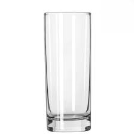
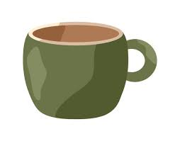
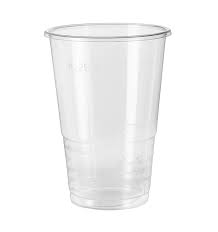
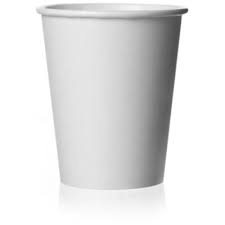
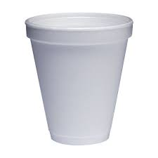

Insulation Experiment Report:





Introduction
Aim: To experiment on the insulation of five cup materials by measuring which retains heat the longest.
Background Information: Insulation slows down the transfer of heat by trapping air in small pockets, reducing heat loss.
Hypothesis: The Styrofoam cup will keep the water warm the longest due to its insulating properties.